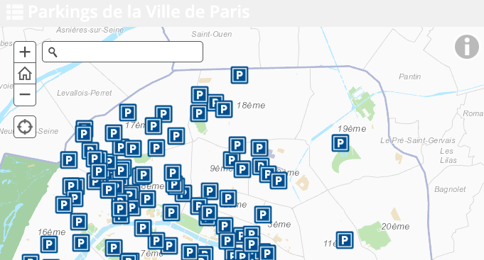

État des lieux
Les usages et techniques utilisées de la cartographie interactive des villes française

Aujourd'hui, pour permettre aux administrés de mieux comprendre les politiques publiques, les Villes utilisent la cartographie rendre l'information accessible. Des solutions fusent et des techniques sont utilisées : Open Street Map, Google Map et Argis.
Enclos à Sapin Montpellier (Solution Open Street Map)
Tous les ans, la Ville de Montpellier au même titre qu’une grande partie des Villes de France fait une opération de recyclage des sapins après la période de Noël. Pour cela, elle met en place des enclos à sapin pour permettre aux ménages de déposer leurs sapins pour leurs donner une seconde vie. Cette politique de gouvernance pilotée conjointement par les municipalités et la région. Dans le projet, la Ville et la Région disposent de données géolocalisant les enclos à sapin de la ville. Ces données sont diffusées sur le portail Open Data de la Ville puis mit en valeur sous forme de cartographie dans le but d’indiquer aux usagers chaque endroit. Pour notre cas, la carte a été produite avec l’outil Open Source OpenStreetMap. Le fond de carte utilisé par l’auteur est OSM-Fr le format de base que propose OpenStreetMap. Nous disposons ici d’une carte interactive où au click, on peut afficher des informations pratiques sur les éléments représentés.
- Titre : Cartographie interactive des enclos à Sapin de la Ville de Montpellier
- Auteur : Ville de Montpellier
- Voir en plein écran
Offre de parking Paris (Solution ESRI de ARCGIS)
Une autre solution est utilisée par les grandes Villes comme Paris. En effet pour la carte ci-dessus, on a une solution de carte qui est propulsée par ESRI d’ARCGIS. Cette carte intègre une fonctionnalité de légende beaucoup plus élaborée dans la mesure où la navigation est claire avec le pictogramme informations (i). De plus, la mise en place d’une fonctionnalité de recherche au même titre que ceux d’Issy-les-Moulineaux facilite la navigation et la recherche d’adresse pour ceux qui le souhaitent. (Fonctionnalité qui est beaucoup mise en évidence par la carte de Paris). Toutefois, cette carte n’est pas personnalisable par l’utilisateur. Ce qui fait qu’on reste limité à ce fond de carte.
- Titre : Parking de la Ville de Paris
- Auteur : Ville de Paris
Zone de stationnement Corbeil Essonne (Solution Google Maps)
Pour communiquer sur les zones de stationnement, certaines municipalités utilisent la cartographie interactive pour indiquer aux usagers les zones de stationnement. Ceci toujours dans le but de rendre plus facile l’usage du service public à travers l’usage de la carte comme outil de communication. Concernant l’outil mis en place pour mettre en œuvre cette carte, la municipalité a utilisé l'outil Google Maps. Toutefois, on peut noter que le choix du fond de carte pour ce cas ne permet pas une lecture optimale des informations présentes sur la carte. En effet, il nous est difficile de lire certaines informations.
- Titre : Zone bleue de stationnement
- Auteur : Ville de Corbeille Essonne
- Voir en plein écran